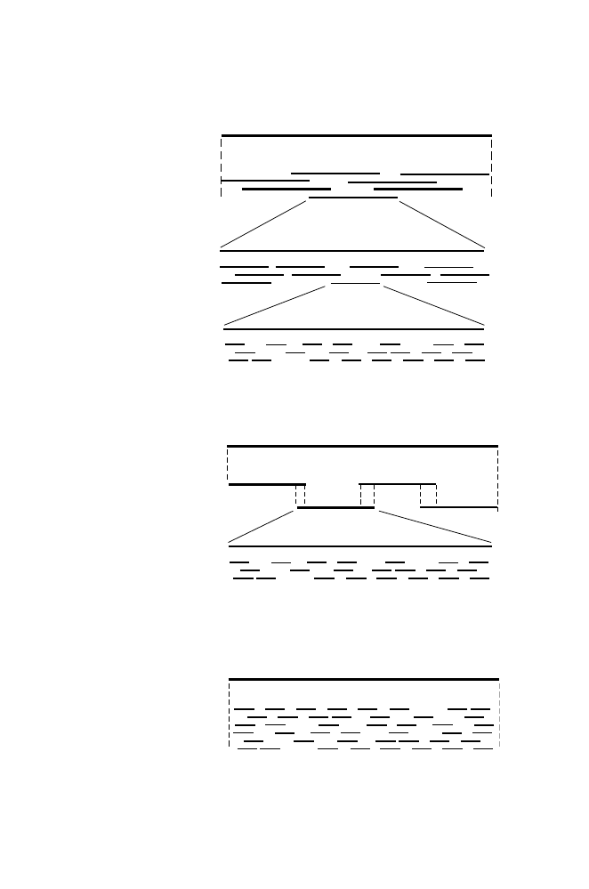

Genome
Small-insert
plasmid library
C. Whole-genome shotgun sequencing
Genome
Large-insert
BAC library
Intermediate-insert
cosmid library
Small-insert
plasmid library
A. Three-stage divide-and-conquer
Genome
Connected
BAC library
Small-insert
plasmid library
B. Shotgun sequencing of connected BACs
Fig. 8.5.
Strategies for genomic sequencing. Panel A: Clone-by-clone three-stage
divide-and-conquer approach. Panel B: Sequencing of BACs joined by sequence-
tagged connectors (STCs). Panel C: Whole-genome shotgun sequencing.